24 dias de Natal em família com a Bíblia: uma história e uma peça do presépio por dia. No dia 24, o presépio está completo, feito pelas mãos do seu filho.
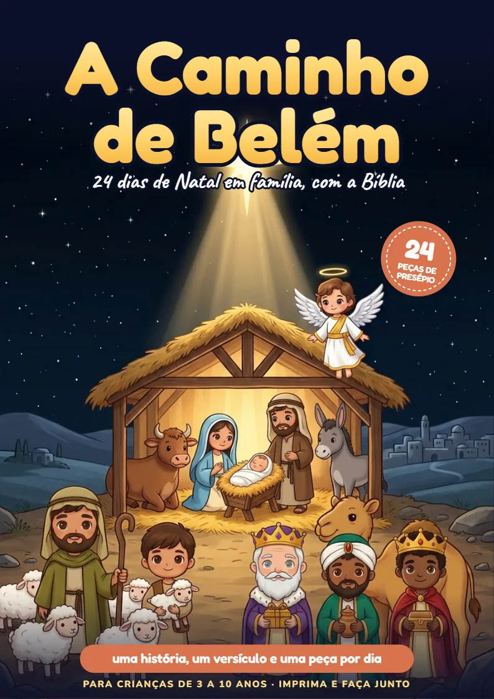
PDF para imprimir · imprima só a página do dia · chega no e-mail logo depois do pagamento · garantia de 7 diasSão as páginas reais do PDF: a história, o versículo com gestos, as perguntas, a oração, a atividade e a primeira peça do presépio. Toque numa folha para abrir.
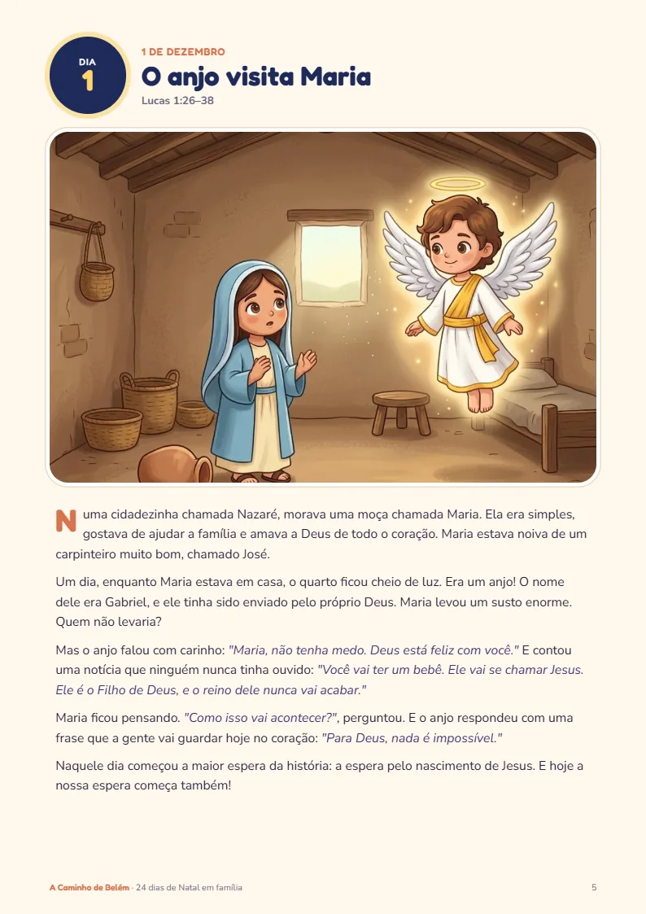
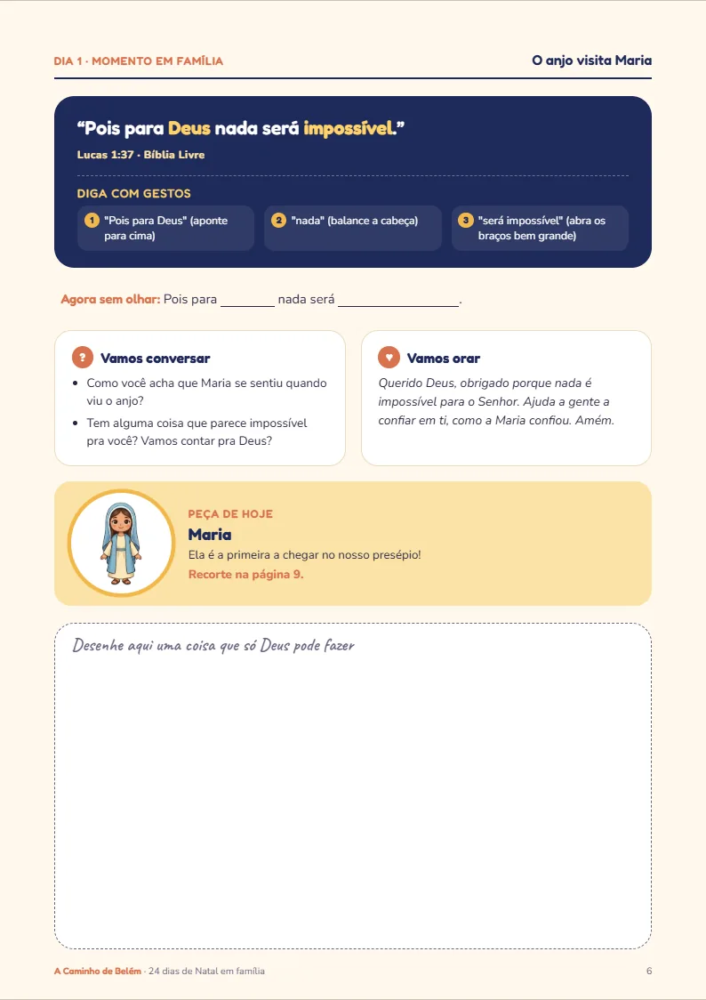
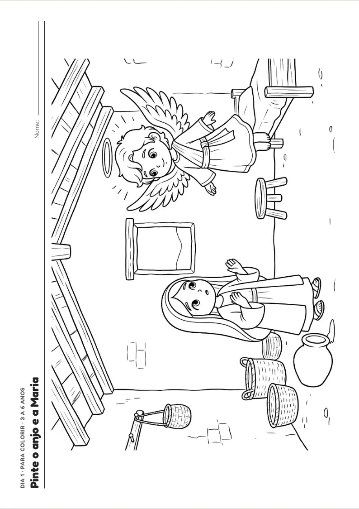
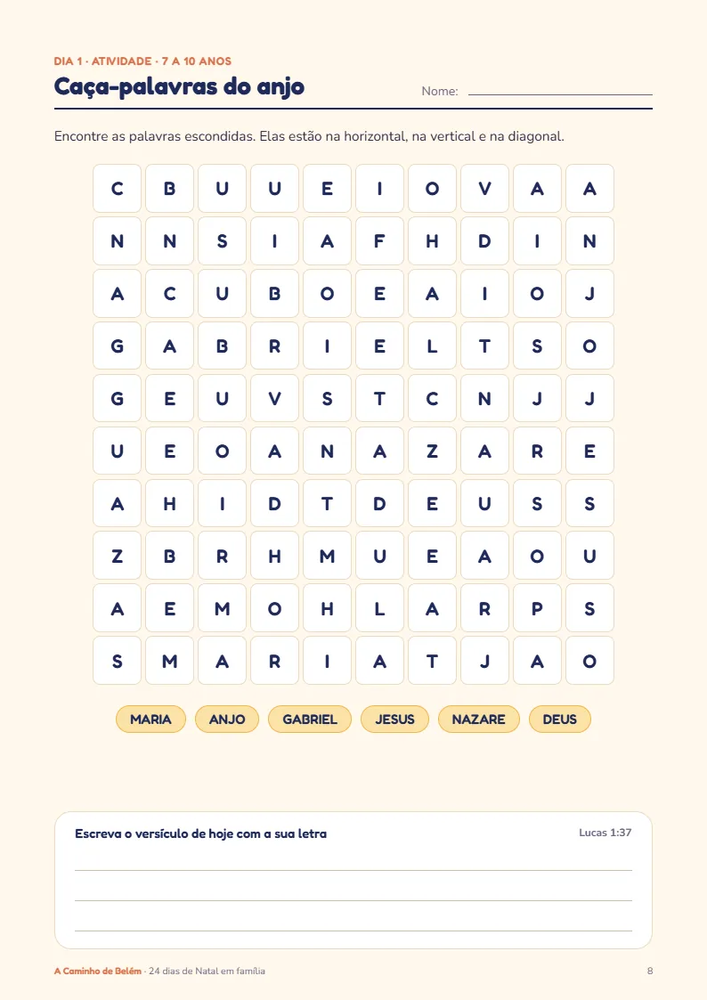
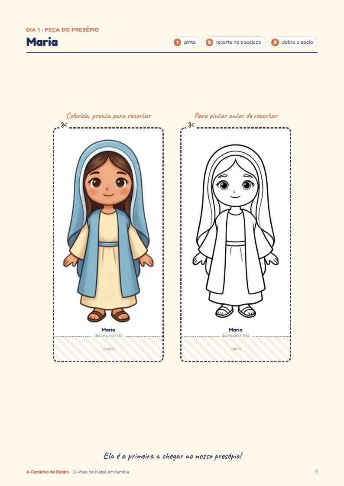
Imprima e faça com a sua criança hoje. Se gostar, os outros 23 dias estão no livro completo.
Cada dia tem a mesma rotina. Você lê, vocês conversam, ela pinta, e o presépio vai crescendo na mesa.
Uma narrativa bíblica ilustrada, com as falas marcadas, para ler em voz alta antes de dormir.
Um versículo com gestos para decorar, duas perguntas para a conversa e uma oração curta.
Um desenho para colorir (3 a 6 anos) e uma atividade: caça-palavras, labirinto, palavras embaralhadas (7 a 10 anos).
Uma peça por dia: pintar, recortar, colar na mesa. No dia 24 ela é o menino Jesus.
O que chega no seu e-mail e como fica na mesa.
A manjedoura fica vazia até o último dia, quando entra o menino Jesus, com as mãos da sua criança.
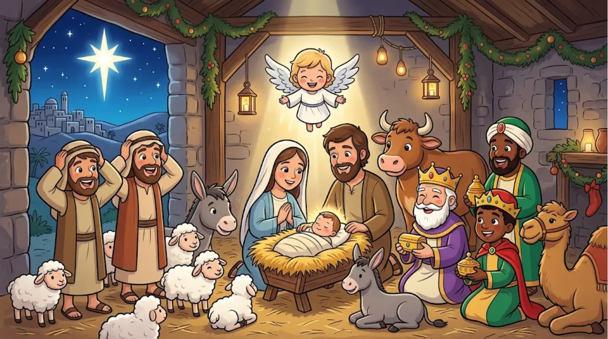
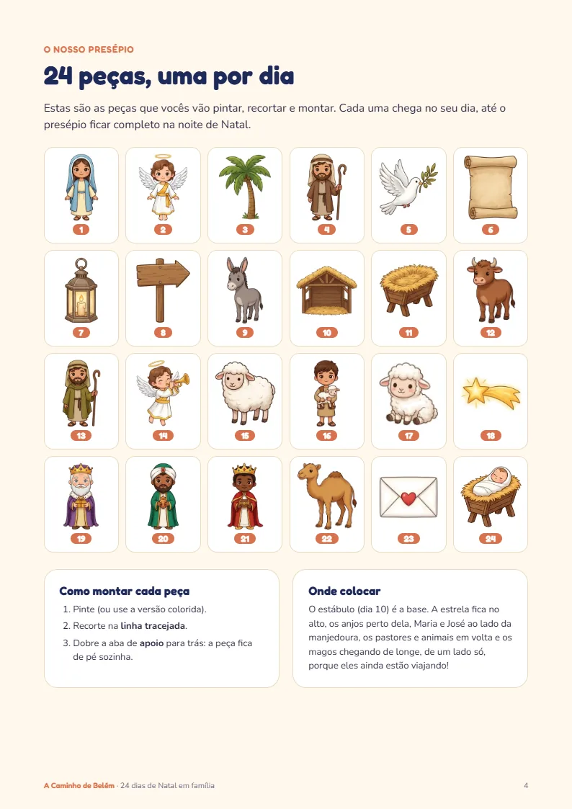
São 24 peças, uma por dia: Maria, o anjo Gabriel, José, o burrinho, o estábulo, a manjedoura, o boi, os pastores, as ovelhas, a estrela, os três magos, o camelo… e, no último dia, o menino Jesus.
Texto bíblico da Bíblia Livre, sem termos de uma denominação só. Serve para família católica e evangélica.
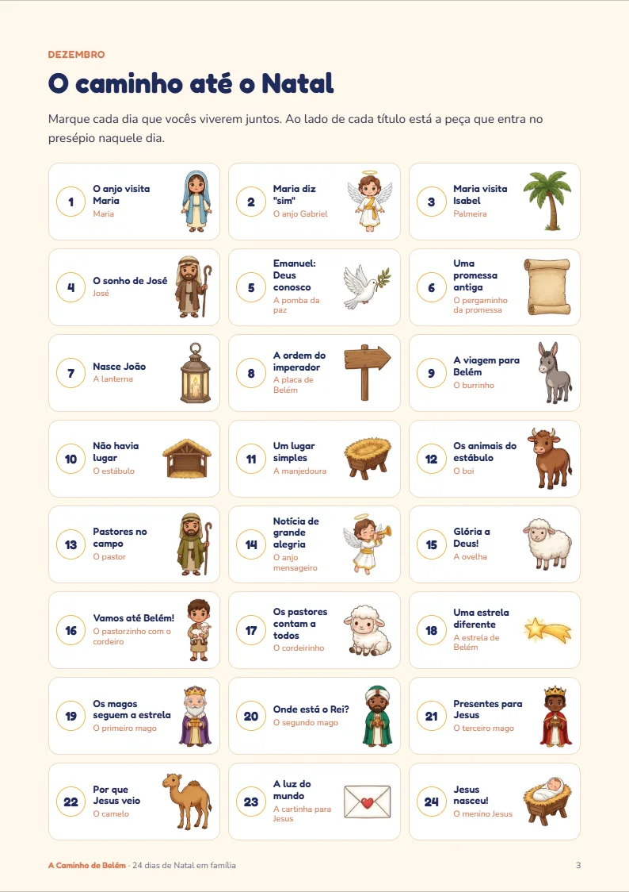
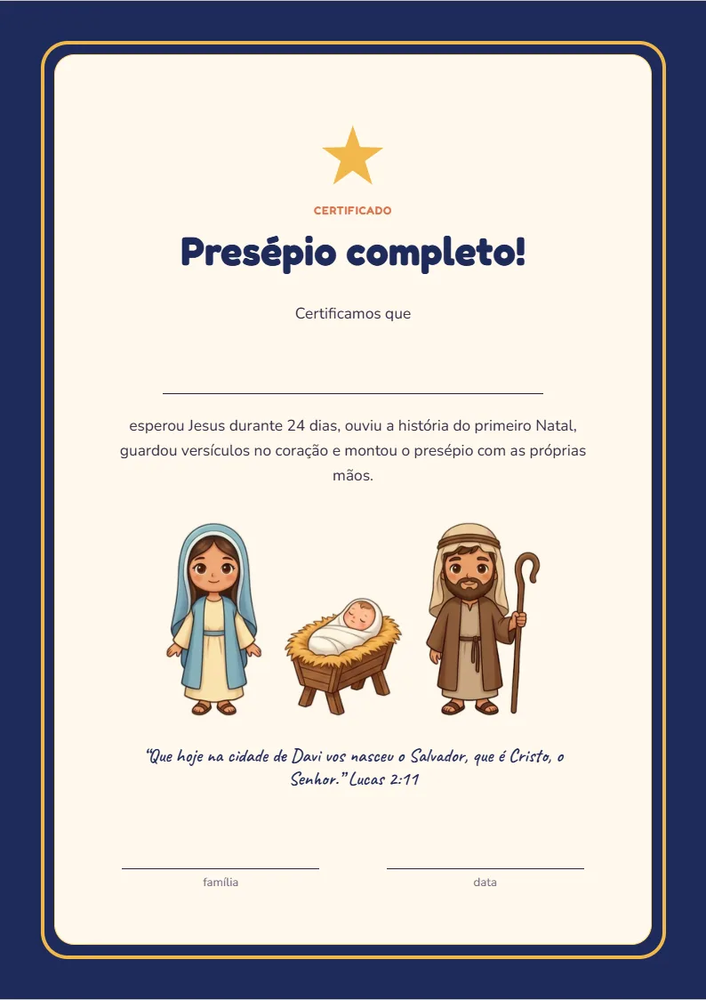
Que querem um Natal com mais Jesus e menos tela, sem precisar planejar 24 dias de atividade.
Que querem dar um presente que dura 24 dias, em vez de mais uma coisa embrulhada.
O PDF comum é de uso familiar. Para usar com a turma inteira existe o Kit Turma, com licença para a sala, por R$ 27.
Quero o Kit Turma · R$ 27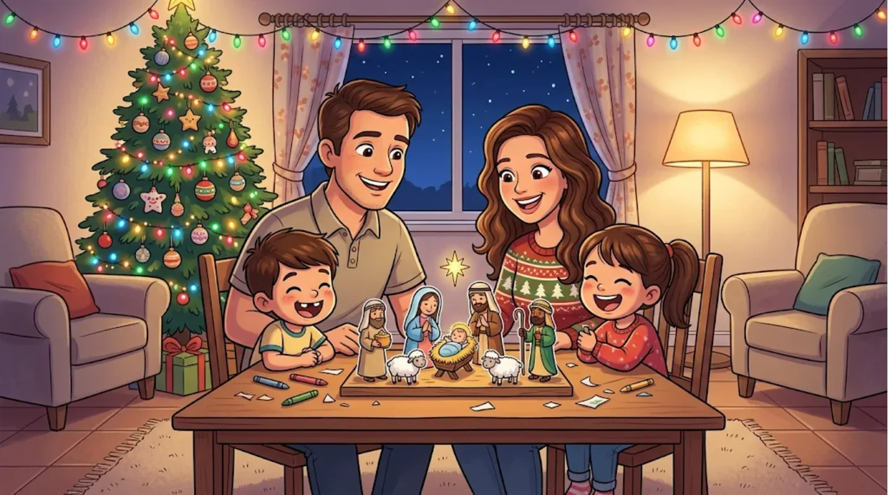
Uma história por dia, uma peça por dia, e a mesa vai crescendo.
Garantia de 7 dias. Se em 7 dias você achar que não é pra sua família, devolvemos 100% do valor. Sem perguntas.
É só pedir por e-mail ou direto na Greenn, em reclamacao.greenn.com.br. No Pix, o dinheiro volta na hora.Você não imprime o livro inteiro de uma vez. Imprime só o dia: a história, a página da família, o desenho ou a atividade da idade da sua criança e a peça do presépio. São 4 folhas por dia (ou 2, se imprimir frente e verso).
Em 24 dias dá cerca de 96 folhas: mais ou menos um pacote de 100 folhas de sulfite. Tudo funciona em preto e branco, porque a cor vem do lápis da criança.
Sem impressora em casa? Leve o PDF do dia no celular à papelaria, ou imprima a semana de uma vez no trabalho.
O dia 1º chega rápido. Baixe o livro agora e comece na mesa da cozinha, com o café na mão.